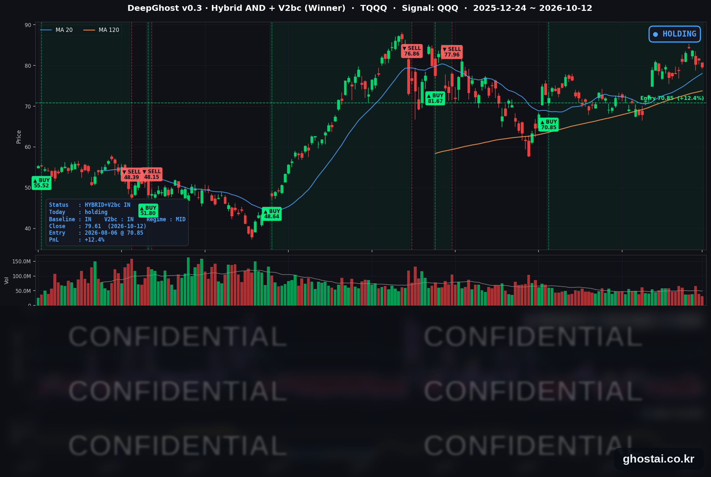

반도체 5일 연속 하락, S&P 500은 보합
· Ghost.AI 데일리 리포트
👻 매일 시그널과 히스토리를 홈페이지에서 한눈에 → www.ghostai.co.kr
회원 페이지 안내 — 회원 가입하시면 커버리지 전 종목의 원본 시그널과 분석 레포트를 매일 확인하실 수 있습니다. 회원 페이지는 블로그·유튜브보다 먼저 업데이트됩니다. 선착순 100명을 모집하고 있으며, 이메일과 필명만으로 가입하실 수 있고 서비스 사용료는 받지 않습니다. 가입 신청 후 운영자 승인을 거쳐 이용하실 수 있습니다.
S&P 500은 0.06% 내린 7,807.24로 보합 마감했고, 구성종목 493개 중 315개는 올랐습니다. 하락은 반도체와 광통신에 몰렸습니다. 중국 메모리 업체 CXMT가 고밀도 서버용 D램 출시 계획을 밝히면서 마이크론이 3.88% 내렸고, 반도체 ETF(SOXX)는 2.60% 내려 7월 29일 이후 처음으로 5거래일 연속 하락했습니다. 반도체 비중이 큰 나스닥100(QQQ)은 0.70% 내렸고, 다우는 0.38% 올라 3거래일 연속 상승했습니다. TQQQ 전략은 47거래일째 보유를 유지했고, 전략 수익률은 +14.72%에서 +12.36%로 낮아졌습니다.
📊 오늘의 매매 신호
| 항목 | 내용 |
|---|---|
| 오늘 할 일 | ✅ 아무것도 안 해도 됩니다 |
| 포지션 상태 | 📈 TQQQ 보유 중 (IN POSITION) |
| 매수 진입일 | 2026-08-06 (47거래일째) |
| 진입가 → 현재가 | $70.85 → $79.61 |
| 현재 포지션 수익 | +12.36% |
TQQQ 시그널 — IN POSITION
현재 상태: 매수 포지션 유지 중 | 이번 포지션 수익 +12.36%

QQQ가 -0.70% 내리면서 TQQQ는 -2.05% 내린 79.61달러로 마감했습니다. 전략의 평가수익률은 전 거래일 +14.72%에서 +12.36%로 낮아졌습니다. 오늘 새 신호는 없었고 전략은 보유를 유지했지만, 모델 기준으로 매도 신호까지의 여유는 전일보다 줄었습니다. TQQQ 종가는 사상 최고 종가(6월 2일, 87.22달러)보다 8.73% 낮습니다.
오늘 QQQ 하락은 반도체에서 나왔습니다. 지난주에는 반도체 ETF가 한 주에 5% 넘게 내렸는데도 QQQ가 소폭 올랐지만, 오늘은 S&P 500이 보합인 날 QQQ가 0.70% 내려 반도체 약세가 나스닥100 하락으로 이어졌습니다. 전략 수익률은 8월 6일 진입 이후 최고였던 10월 6일(+18.91%)보다 6.55%p 낮습니다. 10월 13일 채권시장이 다시 열리고, 10월 14일에는 9월 CPI가 나옵니다.
오늘 미국 시장 — 시황 요약
지수 마감
| 지수 | 종가 | 등락률 | 사상 최고 종가 대비 |
|---|---|---|---|
| S&P 500 | 7,807.24 | -0.06% | -0.15% (10/6) |
| 나스닥 종합 | 27,245.90 | -0.44% | -1.28% (10/6) |
| 다우존스 | 51,850.55 | +0.38% | -4.60% (8/5) |
| 러셀 2000 (IWM) | 277.90 | -0.37% | -8.91% (8/14) |
| QQQ (나스닥100) | 746.04 | -0.70% | -1.79% (10/6) |
| TQQQ | 79.61 | -2.05% | -8.73% (6/2) |
| 반도체 ETF (SOXX) | 544.85 | -2.60% | -16.82% (6/22) |
지수는 보합이었지만 업종 차이가 컸습니다. 정보기술 72종목 중 19종목만 올랐고(중간값 -1.27%), 에너지는 21종목 중 19종목이 올랐습니다(중간값 +1.42%). 시가총액이 큰 반도체·하드웨어 종목이 내려 S&P 500 등락률(-0.06%)은 구성종목 중간값(+0.44%)보다 낮았습니다. 다우는 9월 22일 이후 가장 높은 종가를 기록했고, 오늘 사상 최고 종가를 기록한 지수는 없습니다.
오늘은 S&P 500이 2022년 최저 종가(10월 12일, 3,577.03)를 기록한 지 4년이 되는 날입니다. 그 뒤 S&P 500은 118.26%, 나스닥 종합은 161.55% 올랐습니다.
국채 금리 동향
10월 12일은 콜럼버스 데이로 채권시장이 휴장해 금리 변동이 없습니다. 아래는 최신 값인 10월 9일 종가입니다.
| 만기 | 수익률 (10/9 종가) | 10/12 |
|---|---|---|
| 3개월 | 4.057% | 휴장, 변동 없음 |
| 5년 | 5.021% | 휴장, 변동 없음 |
| 10년 | 5.244% | 휴장, 변동 없음 |
| 30년 | 5.600% | 휴장, 변동 없음 |
10년물과 3개월물의 차이는 118.7bp로 역전 없는 우상향 커브입니다. 5년물이 3개월물보다 96bp 높아 채권시장은 연준의 추가 인상 가능성을 반영하고 있습니다. 채권 거래가 없어 오늘 주가에 금리 요인은 없었고, 아래 해먹 총재 발언과 유가 상승에 단기 금리가 어떻게 반응할지는 10월 13일 재개장에서 확인됩니다.
연준 발언 & 금리 패스
- 해먹(Hammack) 클리블랜드 연은 총재 (10/12, 전미실물경제협회 연설): 올해 FOMC 투표권자이며 7월 회의에서 인상을 주장하며 반대표를 냈습니다. "목표에 적시에 도달하려면 제약적인 정책 기조가 필요하다"고 말했고, 조정은 "작게 하되 비교적 빠르게" 하는 편을 선호한다고 했습니다. 물가에 대해서는 "AI 설비 구축에서 나오는 수요 압력이 가격을 올리고 있다"고 진단했습니다.
- 로이터 인터뷰: "경제에 제약을 더 가해야 한다. 다만 어떤 기간에 걸쳐서인지는 열린 문제"라며 10월 27~28일 회의의 인상 여부는 열어 두었습니다. 로이터는 시장이 10월 동결을 예상한다고 전했습니다.
매파적 발언입니다. 10월 8일 무살렘 세인트루이스 연은 총재에 이어 추가 긴축 필요성을 말했고, 둘 다 시점은 정하지 않았습니다. 정책금리는 3.75~4.00%이고, 10월 17일(토)부터 위원들의 공개 발언 금지 기간이 시작됩니다. 10월 회의 전 마지막 큰 지표는 10월 14일 9월 CPI입니다.
오늘의 핵심 이슈
- 중국 CXMT 발표와 광통신 하락에 반도체 ETF 5거래일 연속 하락. CXMT의 차오칸위 총재는 주말 상하이 행사에서 셀 면적을 기존 방식보다 약 3분의 1 줄인 4F² 구조의 서버용 D램을 연내 출시하겠다고 밝혔습니다. 마이크론은 3.88% 내려 9월 17일 이후 처음 1,000달러 아래로 마감했고, 샌디스크(-5.97%) 등 저장장치 종목도 함께 내렸습니다. 광통신은 회사별 재료 없이 시에나(-9.95%)·루멘텀(-9.78%)·코히런트(-7.87%)가 크게 내렸고, 올해 상승 폭이 큰 데 따른 차익 실현이 이유로 거론됐습니다. SOXX는 10월 5일 종가보다 7.58% 낮습니다.
- 사우디 공항 공격으로 유가 상승. 예멘 후티 반군이 10월 10일(토) 리야드 킹칼리드 국제공항을 미사일로 공격해 13명이 숨졌고, 11일에도 공항을 다시 공격했습니다. 트럼프 대통령이 발표한 러시아-우크라이나 '에너지 휴전'은 러시아가 확인하지 않았고, 젤렌스키 대통령은 12일 러시아가 휴전을 어겼다고 밝혀 유가에 미친 영향은 제한적이었습니다.
- 채권 휴장일에 나온 추가 긴축 주장, 이번 주 은행 실적과 CPI. 해먹 총재 발언에 대한 금리 반응은 10월 13일에 나옵니다. 같은 날 JP모건·골드만삭스·웰스파고·씨티가 3분기 실적을 발표하고, 10월 14일에는 9월 CPI가 나옵니다. CPI는 휘발유 가격 상승으로 전년 대비 3.6~3.7%(8월 3.4%)로 오를 것이라는 예상이 많습니다. 금융 업종은 74종목 중 61종목이 올라 실적 발표를 앞두고 강했습니다.
변동성 & 투자심리
VIX는 14.84에서 15.21로 2.49% 올랐지만 10월 8일(15.41)보다는 낮습니다. CNN 공포탐욕지수는 45.7로 "중립" 구간입니다(전 거래일 45.0, 1주 전 43.7, 한 달 전 32.7). 구성 지표 중 정크본드 수요는 "극단적 탐욕"이고, 주가 강도와 시장 폭은 "극단적 공포"입니다. 지수는 사상 최고치 근처에 있고 VIX도 15 안팎이지만, 반도체가 5거래일째 내렸고 유가가 오른 가운데 CPI를 앞둔 장이라 전반적인 심리는 중립입니다.
매크로 & 원자재
| 품목 | 종가 | 등락률 |
|---|---|---|
| 원유 ETF (USO) | $151.03 | +1.91% |
| 금 ETF (GLD) | $382.15 | -0.63% |
- 유가: 사우디 공항 공격 뒤 장 초반 휴전 소식에 내렸다가 상승으로 돌아섰습니다. USO는 3거래일 연속 올라 9월 24일 이후 가장 높은 종가로 마감했고, 엑손모빌은 사상 최고 종가를 기록했습니다. 오만 소하르 인근과 호르무즈 해협에서 유조선 피격 보도도 있었습니다.
- 금: 달러 강세 속에 GLD가 0.63% 내렸습니다.
주요 종목 동향
| 종목 | 종가 | 등락률 | 비고 |
|---|---|---|---|
| META | 742.96 | +3.38% | 9/24 이후 최대 상승, 유료 AI 모델 '뮤즈 원더' 공개 |
| AAPL | 340.97 | +1.29% | 사상 최고 종가(9/25, 341.07) 대비 -0.03% |
| MSFT | 541.15 | +1.14% | 2025/10/29 이후 최고 종가 |
| NFLX | 70.61 | +0.44% | |
| GOOGL | 352.72 | +0.30% | |
| QCOM | 174.43 | -0.61% | 4거래일 연속 하락, 9/8 이후 최저 종가 |
| AMZN | 259.53 | -1.11% | |
| TSLA | 378.03 | -1.22% | |
| NVDA | 226.32 | -1.29% | 4거래일 연속 하락, 9/25 이후 최저 종가 |
| AVGO | 354.73 | -1.88% | |
| INTC | 101.35 | -3.20% | 3거래일 연속 하락, 9/16 이후 최저 종가 |
| MU | 989.04 | -3.88% | 9/17 이후 처음 1,000달러 아래 종가 |
커버리지 12종목 중 5종목이 오르고 7종목이 내렸습니다. 반도체 5종목(마이크론·인텔·브로드컴·엔비디아·퀄컴)은 모두 내렸고, 애플·마이크로소프트·메타는 올랐습니다. 메타는 월 20달러·100달러 구독으로 쓰는 유료 AI 모델 '뮤즈 원더'를 공개했고, 광고 밖에서 AI 직접 매출을 만드는 시도로 해석됐습니다. 애플과 마이크로소프트는 둘 다 사상 최고 종가에 0.2% 이내로 다가갔습니다. 엔비디아는 주말 사이 파이낸셜타임스(FT)가 오픈 웨이트 모델 개발사 리플렉션 AI 인수 또는 추가 투자 논의를 보도했지만, 주가는 반도체 업종과 같은 방향으로 내렸습니다.
다음 일정 (미 동부시간)
- 10/13(화) 채권시장 재개장 / 07:00 JP모건, 07:30 골드만삭스, 07:00 무렵 웰스파고, 08:00 무렵 씨티 3분기 실적 / 03:45 월러 이사 AI 대담(뉴델리)
- 10/14(수) 08:30 9월 CPI / 14:00 베이지북 / 05:40 보우먼 부의장 대담(방콕)
- 10/15(목) 08:30 9월 PPI·소매판매 / 23:30 워시 의장·게오르기에바 IMF 총재 대담(방콕, 현지 10/16)
- 10/16(금) 08:30 9월 수입물가 / 09:15 9월 산업생산
- 10/17(토) 연준 위원 공개 발언 금지 기간 시작
- 10/27~28 FOMC
Ghost.AI — Quantitative AI Investment
Model: DeepGhost v0.3 | Transformer-Based Deep Learning
Coverage: 14 tickers | Updated every trading day after US market close
⚠️ 본 자료는 정보 제공 목적으로만 작성되었으며 투자 권유가 아닙니다. 모든 투자의 책임은 투자자 본인에게 있습니다. 과거 성과가 미래 수익을 보장하지 않습니다.
[유의사항]
- 본 서비스는 불특정 다수를 대상으로 발행되는 단방향 정보 제공 서비스이며, 투자자 개인의 재산 상황·투자 목적·위험 선호도를 반영한 개별 투자 조언이 아닙니다.
- 고스트에이아이 주식회사는 고객과 쌍방향 의사소통(개별 상담, 맞춤형 자문 등)을 제공하지 않습니다.
- 본 콘텐츠는 투자 권유 또는 매매 주문의 청약·청약의 권유에 해당하지 않으며, 최종 투자 판단 및 그에 따른 손익의 책임은 전적으로 투자자 본인에게 있습니다.
고스트에이아이 주식회사